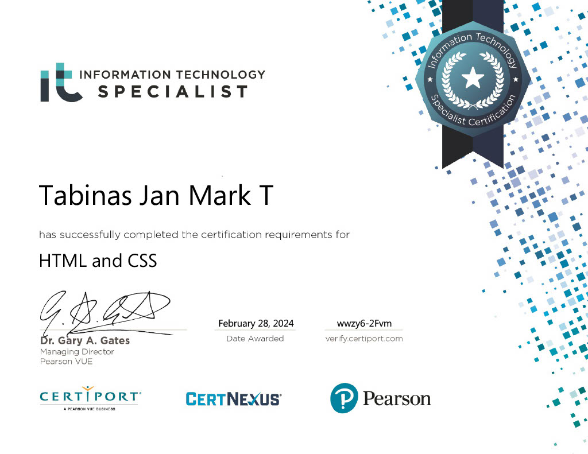
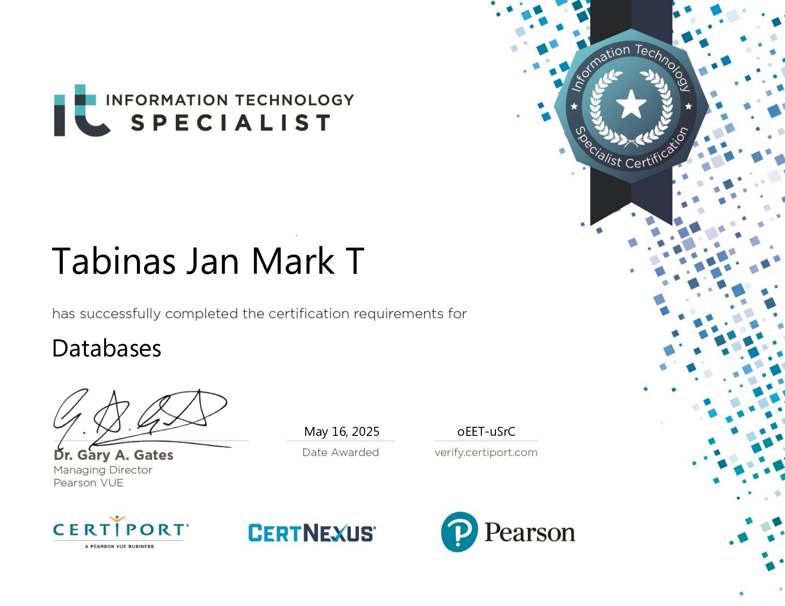

Jan Mark Tabinas
Computer Science student building at the intersection of software and real-world problems. Passionate about computer vision, AI, and building things that matter.
About me
I am a Computer Science student with a foundation in web development and a growing passion for artificial intelligence, while I actively explore AI/ML concepts like retrieval-augmented generation and deep learning.
I learn best by building real-world applications from e‑commerce platforms with secure authentication and payment flows to AI‑powered agents that help students navigate university life. I'm comfortable designing databases, and crafting clean, responsive user interfaces.
I'm looking for an internship where I can learn from experienced developers, and continue growing as a developer.
"Building things that solve real problems."
Technical skills
Certificates

HTML and CSS
Validates proficiency in HTML5 and CSS3 — structuring web content, styling layouts, and building responsive web pages.
February 28, 2024
Databases
Validates proficiency in database design, SQL queries, data normalization, and database management using MySQL.
May 16, 2025Projects
A full‑stack e‑commerce platform for second‑hand fashion. Features include user authentication, product browsing, shopping cart, secure checkout, order management, and an admin dashboard for inventory control. Built with a modern Next.js‑inspired frontend architecture and robust PHP backend with MySQL database.
View on GitHubPrivacy‑preserving conversational agent using Retrieval-Augmented Generation (RAG) to extract and synthesize information from a 134‑page university handbook — giving students instant, accurate answers to academic and admin questions.
View on GitHubA fully responsive, interactive tourism website showcasing Davao City's iconic destinations — Eden's Park, Museo Dabawenyo, Mount Apo, and People's Park. Features glassmorphism cards, interactive modals, scroll reveal animations, and a dynamic typing effect.
View on GitHubA fully responsive, Neumorphic personal portfolio showcasing my projects, skills, and certificates with modern UI/UX principles and dark/light mode. Built from scratch with vanilla HTML, CSS, and JavaScript.
View on GitHub